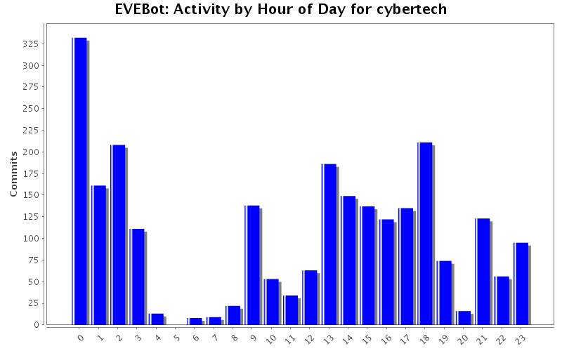
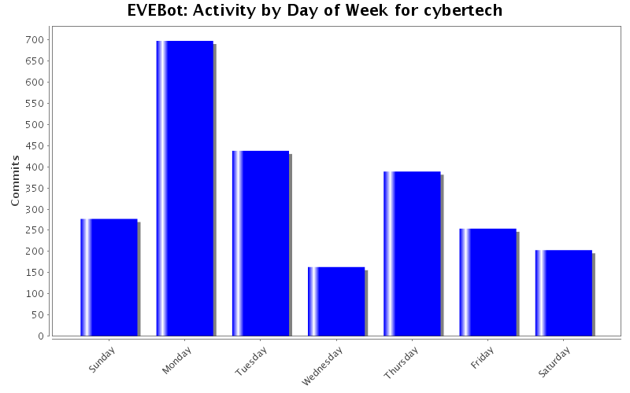
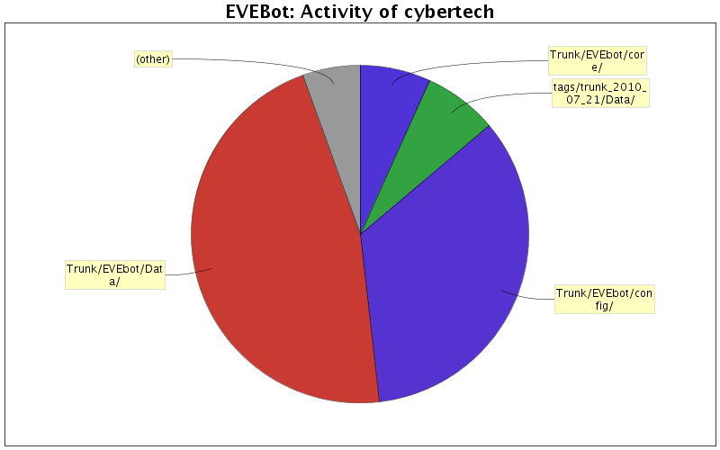

| Directory | Changes | Lines of Code | Lines per Change |
|---|---|---|---|
| Totals | 2454 (100.0%) | 560487 (100.0%) | 228.3 |
| Trunk/EVEbot/Data/ | 30 (1.2%) | 262447 (46.8%) | 8748.2 |
| Trunk/EVEbot/config/ | 31 (1.3%) | 194079 (34.6%) | 6260.6 |
| tags/trunk_2010_07_21/Data/ | 6 (0.2%) | 39994 (7.1%) | 6665.6 |
| Trunk/EVEbot/core/ | 1142 (46.5%) | 38146 (6.8%) | 33.4 |
| Trunk/EVEbot/Behaviors/ | 168 (6.8%) | 7608 (1.4%) | 45.2 |
| Trunk/EVEbot/interface/ | 52 (2.1%) | 2334 (0.4%) | 44.8 |
| Trunk/EVEbot/ | 121 (4.9%) | 2010 (0.4%) | 16.6 |
| branches/stable/core/ | 140 (5.7%) | 1975 (0.4%) | 14.1 |
| Trunk/EVEbot/Threads/ | 82 (3.3%) | 1764 (0.3%) | 21.5 |
| Trunk/EVEbot/External/ | 6 (0.2%) | 1679 (0.3%) | 279.8 |
| Trunk/EVEbot/Testcases/ | 118 (4.8%) | 1599 (0.3%) | 13.5 |
| Trunk/EVEbot/core/Lib/ | 32 (1.3%) | 1293 (0.2%) | 40.4 |
| Install/EVEBot/Testcases/ISXEVE/ | 24 (1.0%) | 1214 (0.2%) | 50.5 |
| Trunk/EVEbot/Support/ | 47 (1.9%) | 1093 (0.2%) | 23.2 |
| Install/EVEBot/ | 9 (0.4%) | 614 (0.1%) | 68.2 |
| branches/stable/ | 24 (1.0%) | 470 (0.1%) | 19.5 |
| Trunk/EVEbot/core/Lib/UplinkManager/ | 8 (0.3%) | 362 (0.1%) | 45.2 |
| Trunk/EVEbot/Modes/ | 18 (0.7%) | 342 (0.1%) | 19.0 |
| branches/stable/Support/ | 17 (0.7%) | 328 (0.1%) | 19.2 |
| branches/stable/Behaviors/ | 47 (1.9%) | 295 (0.1%) | 6.2 |
| Trunk/EVEbot/interface/eveskin/ | 20 (0.8%) | 185 (0.0%) | 9.2 |
| tags/trunk_2010_07_21/core/ | 34 (1.4%) | 172 (0.0%) | 5.0 |
| Install/EVEBot/Testcases/EVEBot/ | 7 (0.3%) | 169 (0.0%) | 24.1 |
| Trunk/EVEbot/Docs/ | 3 (0.1%) | 80 (0.0%) | 26.6 |
| Trunk/EVEbot/config/Examples/ | 4 (0.2%) | 77 (0.0%) | 19.2 |
| Trunk/ | 6 (0.2%) | 65 (0.0%) | 10.8 |
| tags/trunk_2010_07_21/Behaviors/ | 6 (0.2%) | 31 (0.0%) | 5.1 |
| Install/EVEBot/Config/Config_Templates/ | 1 (0.0%) | 23 (0.0%) | 23.0 |
| Trunk/EVEbot/Behaviors/Testcases/ | 4 (0.2%) | 12 (0.0%) | 3.0 |
| tags/trunk_2010_07_21/Threads/ | 6 (0.2%) | 11 (0.0%) | 1.8 |
| tags/trunk_2010_07_21/ | 8 (0.3%) | 5 (0.0%) | 0.6 |
| tags/trunk_2010_07_21/Modes/ | 3 (0.1%) | 4 (0.0%) | 1.3 |
| branches/stable/interface/ | 4 (0.2%) | 3 (0.0%) | 0.7 |
| Trunk/EVEbot/test/oboron_solojetcanhauler/interface/ | 3 (0.1%) | 2 (0.0%) | 0.6 |
| branches/stable/test/ | 2 (0.1%) | 1 (0.0%) | 0.5 |
| Trunk/EVEbot/test/ | 9 (0.4%) | 1 (0.0%) | 0.1 |
| tags/trunk_2010_07_21/External/ | 2 (0.1%) | 0 (0.0%) | 0.0 |
| branches/stable/Docs/ | 2 (0.1%) | 0 (0.0%) | 0.0 |
| Trunk/Install/ | 4 (0.2%) | 0 (0.0%) | 0.0 |
| Trunk/EVEbot/test/oboron_solojetcanhauler/core/ | 6 (0.2%) | 0 (0.0%) | 0.0 |
| Trunk/EVEbot/test/oboron_solojetcanhauler/ | 3 (0.1%) | 0 (0.0%) | 0.0 |
| Trunk/EVEbot/test/evebot_aboron/interface/ | 2 (0.1%) | 0 (0.0%) | 0.0 |
| Trunk/EVEbot/test/evebot_aboron/core/ | 60 (2.4%) | 0 (0.0%) | 0.0 |
| Trunk/EVEbot/test/evebot_aboron/ | 2 (0.1%) | 0 (0.0%) | 0.0 |
| Trunk/EVEbot/sounds/ | 1 (0.0%) | 0 (0.0%) | 0.0 |
| Trunk/EVEbot/interface/eveskin/OptionsGUI/ | 22 (0.9%) | 0 (0.0%) | 0.0 |
| Trunk/EVEbot/interface/eveskin/MainGUI/Unused/ | 20 (0.8%) | 0 (0.0%) | 0.0 |
| Trunk/EVEbot/interface/eveskin/MainGUI/ | 44 (1.8%) | 0 (0.0%) | 0.0 |
| Trunk/EVEbot/Behaviors/UserDefined/ | 1 (0.0%) | 0 (0.0%) | 0.0 |
| Install/EVEBot/Testcases/ | 39 (1.6%) | 0 (0.0%) | 0.0 |
| Install/EVEBot/Support/ | 2 (0.1%) | 0 (0.0%) | 0.0 |
| Install/ | 2 (0.1%) | 0 (0.0%) | 0.0 |

Add Config.Miner:SetEnabled & SetPriority for use by the UI
95 lines of code changed in 1 file:
EntityCache: Set default decay to 2.0 seconds, improve some logging,
EntityCache: Fix printing of timer ranges for change to obj_PulseTimer
Logger: Stub methods for LogChat/LogPilot
EVEBot: Add support for init params to CreateVariables (declarevariable wrapper)
19 lines of code changed in 3 files:
Add support for Tab (Add/Remove)
Add creators for Children, Text, Button, and Listbox objects
87 lines of code changed in 1 file:
Log EVEBot:Resume/Pause to console as well
IRC: Handle all #ifdefs for ISXIM internally.
Default copy of _ActiveModules.iss, which will be recreated by the top level EVEBot.iss
Updated copies of _includes.iss and _variables.iss
Update startup checks for Threads to avoid inf loop if main script crashes during load.
110 lines of code changed in 9 files:
Add support for running testcase behaviors instead of operational behaviors (-testcases param)
Add support for disabling behaviors from being loaded
Add support for not re-creating the behavior files at startup (-nocreate param), in order to preserve disabled options.
Remove Modes/* includes, as the files have been moved to Behaviors
87 lines of code changed in 2 files:
Consolidating behavioral modules.
431 lines of code changed in 7 files:
Patch from Valerian:
Fix dock/undock loop when hauler is delivering to a station in the same system
Use queue for full haulers, so they aren't lost for a miner cycle (till the miner re-calls). Note that this may cause un-necessary pickups if you're using multiple haulers.
35 lines of code changed in 1 file:
Remove deprecated or unused code.
4 lines of code changed in 8 files:
Use the defined Miner Delivery Location for Station delivery in hauler mode, instead of using the home station or nearest.
2 lines of code changed in 1 file:
Don't save the whitelist/blacklist on existing, unless it's the first time and we need to create the template file.
Remove all waitframes in favour of timed waits, for those people, or person, who have sub-second fps #'s.
126 lines of code changed in 7 files:
Override AllowedAccess in classes inheriting obj_Jetcan.
98 lines of code changed in 3 files:
Fix DoGetModules testcase
Add testcase for EVE:QueryEntities
88 lines of code changed in 2 files:
Add questor to the set of known bots to start.
10 lines of code changed in 1 file:
Switch from cached instation to active.
4 lines of code changed in 1 file:
Fix label for metalevel value.
1 lines of code changed in 1 file:
obj_Defense: Convert to obj_PulseTimer
obj_Defense: Disable PulseTimer randomizing for self if we're hiding.
obj_Defense: move to new Targeting syntax.
obj_Defense: FleetToStation and FleetoSafespot are now methods, not functions
obj_Defense: Wait for EVEBot before starting up.
obj_MissionCommands: Move to new Targeting syntax
obj_MissionCommands: Move log statements to debug-only.
52 lines of code changed in 2 files:
obj_Missioneer.iss: Convert to obj_PulseTimer
10 lines of code changed in 1 file:
Convert to obj_PulseTimer
Load skin properly
Move relevant code from Reload() to PopulateBehavioralComboBox()
Add CheckUIPosition to report off-screen window and give instructions for fixing on startup
46 lines of code changed in 1 file:
obj_EntityCache: Convert to obj_PulseTimer
obj_EVEBOT: Convert to obj_PulseTimer
obj_EVEBot: Respect EVEBot.Disabled
obj_EVEBot: Pause and Resume methods take string param for reason.
obj_EVEBot: SetVersion includes the module(s) being debugged
54 lines of code changed in 2 files:
Add dir layout for testcase behaviors
EVEBot.iss: Move all var instantiation thru CreateVariable for timing of per-object initialization in debug cases.
EVEBot.iss: Load testcase behaviors if EVEBOT_DEBUG is set. This will get its own define later when it annoys me.
EVEBot.iss: Move all echos to Logger:Log in startup.
EVEBot.iss: Optimize startup time (from 10-20 seconds down to <2 sec so far)
EVEBot.iss: Abort if some numbskull has failed to include any behaviors.
EVEBot.iss: Load threads by wildcard
130 lines of code changed in 4 files:
(711 more)